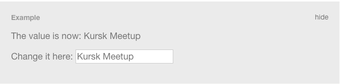

ClojureScript в современной веб-разработке
Начнем с простого нехоливарного тезиса
Мы все делали неправильно!
Project tree:
|-- css
| `-- global.css
|-- img
| |-- border.jpg
| |-- bg_top.gif
| `-- logo.jpg
|-- js
| |-- jquery.js
| |-- prototype.js
| `-- myscript.js
|-- html
| |-- contact.html
| |-- home.html
| `-- products.html
`-- index.html
Так считаю не только я, но и эти ребята:


Не нужно резать приложение по шву технологий
(js | css | html)!

Его нужно резать на логические блоки
У каждого свой путь
Google - Web Components
Yandex - BEM + BEM-tools
Не смотря на плюсы других решений, мы в свое время выбрали...
React.js
При первом знакомстве код из tutorial'a React.js...
... вызывает такую реакцию!
Но это только сначала!
На самом деле React очень хорош
- Он уже сейчас позволяет писать независимые компоненты
- Это всего лишь библиотека, а не framework! Его можно использовать в любом проекте
- Состояние компонентов неизменяемо (нельзя сделать так component.title = "Some new title"
- Состояние компонентов устанавливается явно! И это приводит к "реактивному" обновлению состояний дочерних элементов
- Функции в компонентах React.js - "практически" чистые (использование внешнего контекста сильно бъет по рукам). Они принимают данные и возвращают DOM (ну почти DOM)
- React.js - ОЧЕНЬ БЫСТРЫЙ!
Но у него есть один большой минус :( И имя ему...
JavaScript
И тут на помощь нам приходит ClojureScript
Плюсы ClojureScript
- Все приложение оптимизируется и минифицируется при помощи Google Closure Compiler
- Модульность, анонимные функции с удобным синтаксисом, персистентные структуры данных, иммутабельность из коробки
- Очень выразительный
- И конечно же...
... НЕРЕАЛЬНО КРУТОЙ REPL!!!
Заменим React.js и CSS на Reagent и Garden и получим независимый компонент
Начнем с Reagent'a
- Это практически тот же React.js
- Нет необходимости использывать XML в коде. Описываем HTML структурами данных ClojureScript
- Простой синтаксис
- Состояние приложения хранится в атомах, отдельно от компонетов. Мы можем обновлять состояние атомов, что влечет обновление компонентов, использующих данные атомы
Пример Reagent-компонента
(ns example
(:require [reagent.core :as reagent :refer [atom]]))
(defn atom-input [value]
[:input {:type "text"
:value @value
:on-change #(reset! value (-> % .-target .-value))}])
(defn shared-state []
(let [val (atom "foo")]
(fn []
[:div
[:p "The value is now: " @val]
[:p "Change it here: " [atom-input val]]])))
Получаем это
Добавим немного стиля!
В этом нам поможет Garden
- Позволяет описывать CSS в том же стиле, что и Reagent
- Имеет возможность автоматической расстановки вендорных префиксов
- Данные - это код, а код - это данные. Мы можем реально программировать наш CSS :)
- Идеально сочетается с Reagent!
Пример использования Garden
(css {:vendors ["webkit" "moz" "o"]}
[[:.fn-simple-component {:color "#353535"}]
[:.fn-simple-component-title
^:prefix {:border-radius "10px"}
{:background-color "#f0f0f0"}
{:text-align "center"}
{:color "#353535"}
{:height "200px"}
{:padding "15px"}]]
А теперь объединим Reagent и Garden
(ns frontend-new.components.simple-component
(:require
[reagent.core :as reagent :refer [atom]]
[garden.core :refer [css]]
[frontend-new.common.css-helper :as css-helper :refer [include-css!]]))
(include-css! "fn-simple-component" (css {:vendors ["webkit" "moz" "o"]}
[[:.fn-simple-component {:color "#353535"}]
[:.fn-simple-component-title
^:prefix {:border-radius "10px"}
{:background-color "#f0f0f0"}
{:text-align "center"}
{:color "#353535"}
{:height "200px"}
{:padding "15px"}]]))
(defn simple-component [title]
[:div {:class "fn-simple-component"}
[:h1 {:class "fn-simple-component-title"} title]])
Мы получили независимый компонент!

Немного о REPL
Плюсы:
- Код можно выполнять не перезапуская проект (прямо наживую)
- Постоянно имеем доступ к текущему состоянию приложения
- Очень быстрый способ получить feedback на изменения в коде
Что для этого нужно:
DEMO TIME!
Задавайте вопросы, пожалуйста
Полезные сслыки
- Как мы готовим React, Require и Backbone - статья моего коллеги о структуре одного из наших проектов (без ClojureScript, но с React.js)
- Modern ClojureScript - цикл туториалов по ClojureScript
- Как писать UI без боли React ClojureScript - отличный доклад Александра Соловьева (@asolovyov) (лучше посмотреть все его доклады)
Мои контакты:
- Twitter: @Golovim
- GitHub: github.com/daynin
- VK: vk.com/golovim
- Email: golovim@gmail.com